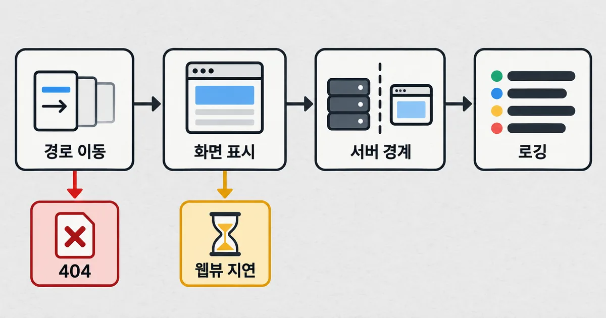
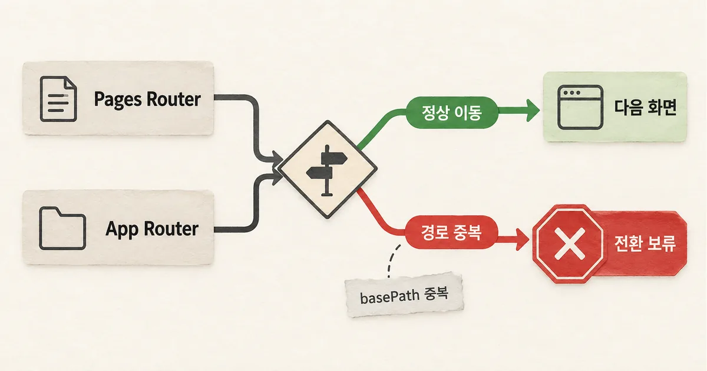

기존 Pages 화면은 그대로 두고 새 화면 하나만 App Router로 옮겼다. 그런데 사용자는 옮기지 않은 화면에서 404를 본다. 두 라우터가 함께 있는 동안에도 주소 이동 방식이 달라질 수 있어서다. 전환을 결정하기 전에 기존 경로, 실제 브라우저 표시, 서버 코드 경계, 운영 로그를 같은 시험에서 확인해야 한다.
개발 가이드
30초 요약
- App Router로 일부 화면만 옮겨도 기존 Pages 화면의 주소 이동이 깨질 수 있다.
- 경로, 실기기 첫 표시, 서버 경계, 운영 로그 네 조건을 작은 화면에서 함께 시험한다.
- 토스뱅크의 실패와 수치는 특정 구성의 사례이므로 서비스별로 다시 재야 한다.
먼저 알아둘 말
- Pages Router
- Next.js에서 pages 폴더의 파일로 주소와 화면을 연결하는 기존 방식.
- App Router
- app 폴더에서 화면과 공통 배치, 서버 컴포넌트를 구성하는 새 라우팅 방식.
- basePath
- 서비스 주소 앞에 자동으로 붙는 공통 경로 접두부.
- 웹뷰
- 모바일 앱 안에서 웹페이지를 표시하는 브라우저 영역.
실전 가이드 · 토스뱅크 기술 블로그 · 2026. 9. 9
App Router 전환 기준: Pages Router를 유지할지 가르는 4가지 조건
토스뱅크의 점진 전환 실패 조건을 출발점으로 Next.js 공식 문서와 비교해 경로·화면·서버 경계·로그 네 항목의 전환 판단표를 만들었다.
기존 화면이 먼저 깨지는지 작은 경로부터 본다
App Router를 일부 화면에만 적용하면 기존 Pages 화면은 그대로일 것 같지만, 두 라우터가 공존하는 동안의 이동도 시험해야 한다. 토스뱅크 사례에서는 basePath가 있는 서비스에서 Pages 화면끼리 이동하던 주소에 접두부가 두 번 붙어 404가 났다. 이 현상은 모든 Next.js 앱의 결함이라는 뜻이 아니라, 그 팀이 사용한 경로 구성에서 확인된 실패다.
- 현재 Next.js 버전과
basePath, 동적 경로를 기록하고 대표 Pages 화면 하나를 고른다. - Pages→Pages, Pages→App, App→Pages 이동을 각각 직접 주소 입력·링크 클릭·뒤로 가기로 나눠 확인한다.
- 첫 화면 표시와 레이아웃 이동을 실제 사용자 브라우저·웹뷰에서 비교한다.
- 서버 전용 코드와 경로별 로깅이 기존과 같은 의미로 동작하는지 확인한다.
최소 재현 경로를 먼저 만들면 새 기능의 장점과 기존 운영의 손실을 같은 범위에서 비교할 수 있다. 토스뱅크는 App Router의 동적 경로가 기존 주소 앞부분과 겹치는 조건에서 중복 접두부를 추적했다. 우리 서비스는 라우트 표가 다르므로 해당 조건을 그대로 일반화하면 안 된다.

두 라우터의 공존은 이동 방식까지 보장하지 않는다
Next.js 공식 가이드는 pages와 app 디렉터리를 동시에 두고 페이지별로 옮기는 방식을 지원한다. 동시에 두 라우터 사이를 이동할 때는 hard navigation이 일어나고 자동 링크 미리 가져오기도 이어지지 않는다고 설명한다. 공존 지원과 기존 탐색 경험의 동일성은 다른 약속이다.
basePath는 링크에 자동 적용된다. 따라서 호출 코드가 이미 접두부를 붙이는지, 라우터 전환 과정에서 다시 붙는지 실제 생성 URL을 봐야 한다. 예를 들어 /docs가 설정된 앱에서 router.push("/guide")의 기대 주소는 /docs/guide다. /docs/docs/guide나 404가 보이면 링크 작성과 라우터 혼용 조건을 분리해 재현한다.
기존 Pages의 router.pathname은 /post/[id] 같은 패턴을 제공했지만, App의 usePathname()은 /post/42 같은 현재 주소를 반환한다. 화면별 집계가 패턴에 의존한다면, 단순 함수 교체로 로그 의미를 보존할 수 없다. 새 패턴 매핑을 만들거나 분석 기준을 바꾸는 비용도 전환 비용에 넣어야 한다.

공식 문서에는 Pages와 App의 혼용, 라우팅 훅 변경, 라우터 간 이동의 제약이 각각 적혀 있다. 토스뱅크의 중복 basePath는 별도 실서비스 사례다. 둘을 혼동해 공식 문서가 같은 버그를 보증한다고 읽어서는 안 된다.
빠른 첫 화면은 사용자 환경에서 다시 재야 한다
App Router는 컴포넌트별 데이터 가져오기와 Suspense로 준비된 영역부터 보이는 구성을 허용한다. 다만 빠르게 전송된 HTML이 빨리 그려지는지는 브라우저 엔진과 화면 배치에 달렸다. 한 줄로 쌓인 모바일 화면에서는 위쪽 스켈레톤이 실제 콘텐츠로 바뀌며 아래 내용을 밀 수도 있다.
토스뱅크가 공개한 세 구역 지연 실험에서 첫 콘텐츠 표시 시점은 Chromium 64ms, WebKit 5,065ms였다. 눈에 보이지 않는 SVG로 WebKit 표시를 앞당긴 경우 103ms였지만, 이는 그 웹뷰와 테스트 구성의 측정이지 일반적인 WebKit 성능 수치가 아니다. 그 팀은 스켈레톤 높이를 맞춰 레이아웃 이동값을 0.138에서 0.036으로 줄였다고 보고했다.
우리 앱에서 같은 숫자를 기대하는 대신, 현재 Pages 화면과 App 시험 화면을 같은 데이터·기기·네트워크에서 비교해야 한다. 첫 표시 시점뿐 아니라 콘텐츠가 바뀔 때의 흔들림, 뒤로 가기, 오류 후 복귀까지 기록한다. 테스트 환경에서만 빠르고 실제 웹뷰에서 느리면 전환의 이득이 뒤집힐 수 있다.
서버 컴포넌트가 줄여 준 코드와 새 경계를 함께 센다
App Router에서는 서버 컴포넌트가 기본이며, 서버에서 필요한 코드를 브라우저 묶음에 보내지 않을 수 있다. 반면 클릭·입력·앱 브리지처럼 브라우저에서 실행할 동작은 클라이언트 컴포넌트 경계를 분명히 해야 한다. 서버 전용 headers()를 클라이언트 코드와 한 파일에서 조건문으로만 나누는 설계는 성립하지 않는다.
토스뱅크는 서버와 클라이언트용 HTTP 구현을 패키지의 조건부 export로 분리해 호출부를 간단히 했다. 이는 그 팀의 해결책이지 App Router 전환에 필수인 공식 설정은 아니다. 비슷한 공통 패키지가 있다면 먼저 서버 실행 시 앱 브리지 호출이 조용히 빠지지 않는지, 사용자별 캐시 키에 사용자 구분이 들어가는지 확인한다.
| 검증 항목 | 기대 이득 | 실패 신호 | 판정 |
|---|---|---|---|
| 경로 이동 | 화면별 점진 전환 | 중복 basePath·404·뒤로 가기 오류 | 기존 이동이 깨지면 보류 |
| 화면 표시 | 부분 렌더링·빠른 첫 표시 | 웹뷰 첫 표시 지연·화면 흔들림 | 실기기 측정 후 판단 |
| 서버 경계 | 브라우저 코드 감소·데이터 코드 정리 | 앱 브리지 누락·사용자별 캐시 혼선 | 핵심 기능 시험 후 판단 |
| 운영 로깅 | 새 라우터 기능 활용 | 경로 패턴 집계·이벤트 의미 변화 | 대체 로그 확인 후 판단 |
어떤 조건이면 옮기고, 언제 멈출까
새 화면 하나에서 서버 데이터 코드가 실제로 줄고, 핵심 사용자 경로가 모두 정상이며, 실기기 표시와 운영 로그가 기준을 지키면 다음 화면을 옮길 수 있다. 반대로 basePath가 중복되거나 패턴별 장애 집계가 사라졌다면 새 화면을 더 넓히기 전에 그 경계를 고쳐야 한다.
Pages Router는 현재 Next.js 문서에서 계속 지원된다고 명시된다. 공식 문서는 새 기능을 위해 App Router로의 전환을 권장하지만, 지원 중인 Pages Router를 쓰는 서비스가 모든 화면을 즉시 옮겨야 한다는 뜻은 아니다. 버전의 지원 상태와 실제 서비스의 전환 비용을 함께 본다.
되돌림은 “모든 코드를 예전 방식으로 재작성”만을 뜻하지 않는다. 시험 라우트를 Pages에 남겨 두고, 이동·성능·로그 기준이 통과한 화면만 App으로 넓히면 범위를 통제할 수 있다. 다만 두 라우터 공존 자체에서 문제가 나는 경로는 이 방식이 안전망이 되지 않으므로, 해당 경로를 먼저 격리하거나 전환을 보류한다.
결정의 끝은 새 구조가 아니라 정상 동작의 증거다
서버 컴포넌트가 작동한다는 사실만으로 전환을 마쳤다고 볼 수 없다. 사용자가 기존 주소로 이동할 수 있고, 화면이 실제 기기에서 빠르게 보이며, 운영 로그가 같은 기준으로 남는지까지 묶어 확인한다. 이 네 항목을 충족하지 못하면 Pages Router 유지가 합리적인 선택일 수 있다.
시범 경로에서 네 신호를 한 번에 기록하면 다음 화면으로 넓힐 이유와 멈춰야 할 이유가 분명해진다. 기존 사용자가 주소를 잃지 않고, 첫 화면이 기준 안에 표시되며, 필요한 로그가 같은 단위로 남는지를 완료 조건으로 삼는다.
참고한 자료
App Router의 장점은 서버 렌더링 구조만으로 확정되지 않는다. 현재 사용자의 주소 이동, 실제 브라우저의 첫 표시, 서버와 브라우저 코드의 경계, 운영 로그가 모두 유지되는지 확인해야 이득을 셀 수 있다. 하나라도 대체할 방법이 없으면 Pages를 유지하는 결정도 기술적으로 타당하다. 작은 경로에서 네 신호를 기록하고, 기존 사용자가 주소를 잃지 않으며 화면과 로그가 기준을 지킬 때만 다음 화면으로 확장한다.